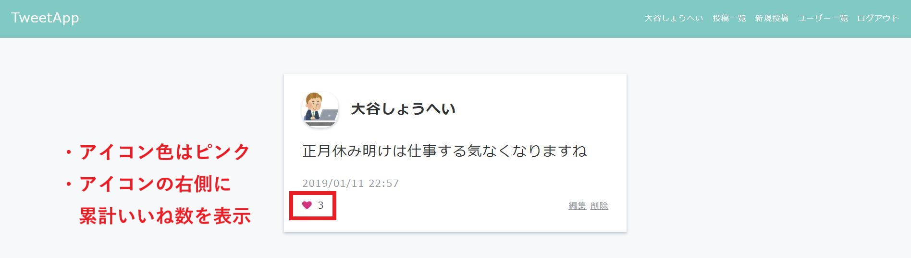
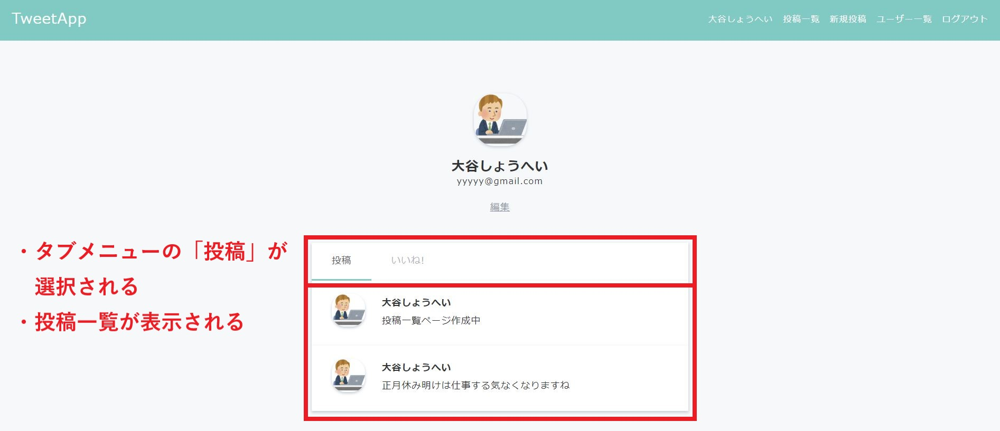
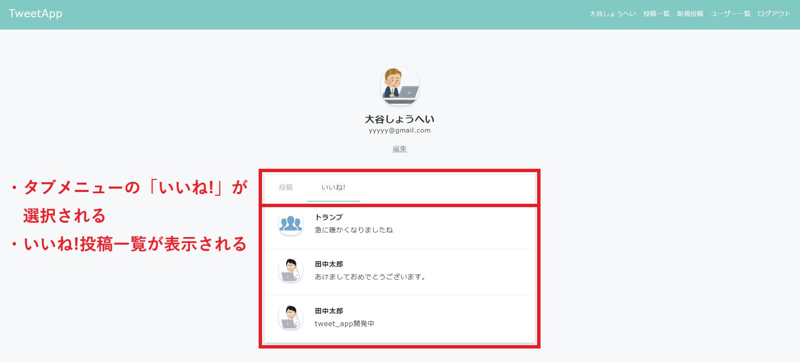
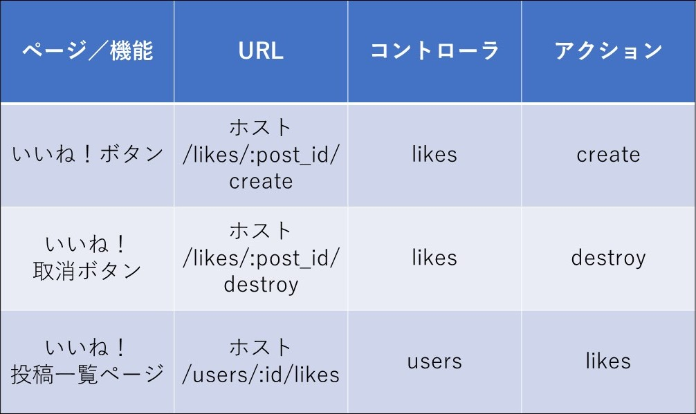

「いいね！」機能
制作イメージ
「いいね！」機能を作成してください。
1. 投稿詳細ページ
1-1. いいね前

1-2. いいね後

2. ユーザー詳細ページ
2-1. 投稿一覧表示

2-2. いいね！投稿一覧表示

【テーブル追加】
◆下記の通り、モデル及びテーブルを準備してください。
・モデル名：Like
・テーブル名：likes
・カラム
- ユーザーID：カラム名 user_id／データ型 integer
- 投稿ID：カラム名 post_id／データ型 integer
◆Likeモデルにバリデーションを追加してください。
・ユーザーID：空の場合
・投稿ID：空の場合
【いいね！機能作成】
◆likesコントローラはrailsコマンドを使用せず手動で作成してください。
◆likesコントローラの全アクションは、ログインユーザーのみアクセス可能なように制限してください。
◆<div class="post-time">閉じタグの直後に「Font Awesome」を使用して、いいね！ボタンのアイコンを設置しリンク化してください。
・Font Awesomeリンク：
https://maxcdn.bootstrapcdn.com/font-awesome/4.7.0/css/font-awesome.min.css
◆アイコン色が下記の通りになるよう、CSSを追加してください。また、下記ダウンロードファイルのposts.scssのソースを該当するCSSファイルに貼り付けてください。
・いいね前：グレー（#8899a6）
・いいね後：ピンク（#ff2581）
◆いいね！数がアイコンの右側に表示されるようにしてください。
◆「ユーザー詳細ページ」にタブメニューを追加し、「いいね！投稿一覧ページ」を新たに作成してください。
◆下記ダウンロードファイルの【users】show.htmlのソースを、<div class="user">閉じタグの直後に貼り付け、「ユーザー詳細ページ」と「いいね！投稿一覧ページ」がタブメニューで切り替わるようにしてください。
【その他】
◆HTML/CSSは下記ファイルをベースとして使用してください。
◆URL、コントローラ名、アクション名は下記のルーティング表に従って作成してください。
・HTML/CSSダウンロード
ルーティング表
